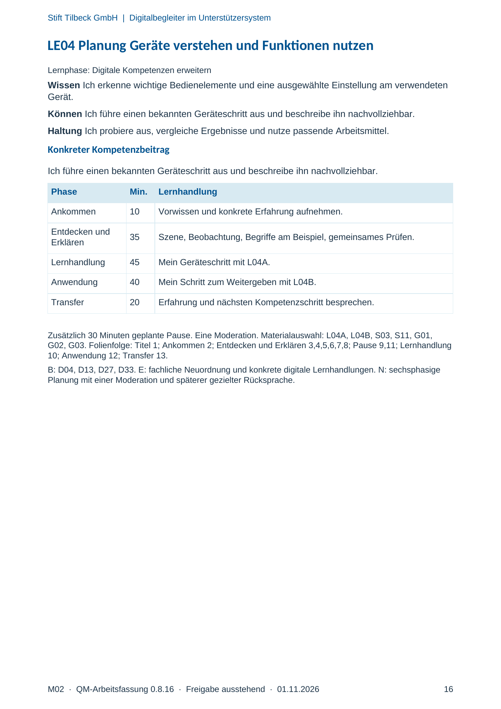
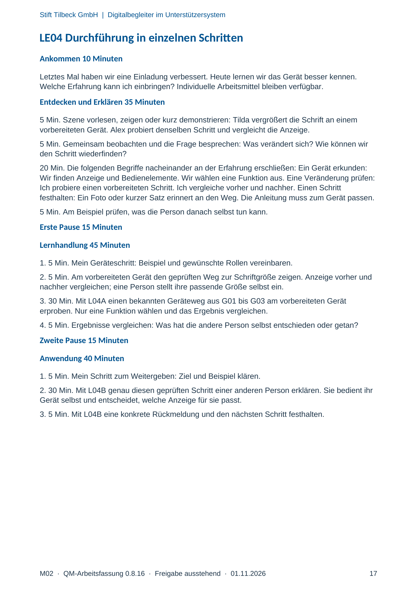
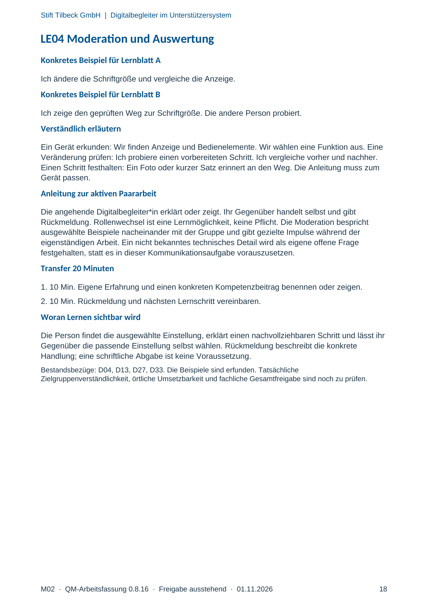

M02 · Originalseite 16, 17, 18
Handbuch und Muster
Gezielte Original-Druckauswahl.
Fragen und Ankreuzfelder werden auf dem Ausdruck bearbeitet. Die Lesefassung speichert keine Antworten.
Lesefassung · Seite 16
Stift Tilbeck GmbH | Digitalbegleiter im Unterstützersystem
M02 · QM-Arbeitsfassung 0.8.16 · Freigabe ausstehend · 01.11.2026 16
LE04 Planung Geräte verstehen und Funktionen nutzen
Lernphase: Digitale Kompetenzen erweitern
Wissen Ich erkenne wichtige Bedienelemente und eine ausgewählte Einstellung am verwendeten
Gerät.
Können Ich führe einen bekannten Geräteschritt aus und beschreibe ihn nachvollziehbar.
Haltung Ich probiere aus, vergleiche Ergebnisse und nutze passende Arbeitsmittel.
Konkreter Kompetenzbeitrag
Ich führe einen bekannten Geräteschritt aus und beschreibe ihn nachvollziehbar.
Phase Min. Lernhandlung
Ankommen 10 Vorwissen und konkrete Erfahrung aufnehmen.
Entdecken und
Erklären 35 Szene, Beobachtung, Begriffe am Beispiel, gemeinsames Prüfen.
Lernhandlung 45 Mein Geräteschritt mit L04A.
Anwendung 40 Mein Schritt zum Weitergeben mit L04B.
Transfer 20 Erfahrung und nächsten Kompetenzschritt besprechen.
Zusätzlich 30 Minuten geplante Pause. Eine Moderation. Materialauswahl: L04A, L04B, S03, S11, G01,
G02, G03. Folienfolge: Titel 1; Ankommen 2; Entdecken und Erklären 3,4,5,6,7,8; Pause 9,11; Lernhandlung
10; Anwendung 12; Transfer 13.
B: D04, D13, D27, D33. E: fachliche Neuordnung und konkrete digitale Lernhandlungen. N: sechsphasige
Planung mit einer Moderation und späterer gezielter Rücksprache.
Originalseite ansehen

Lesefassung · Seite 17
Stift Tilbeck GmbH | Digitalbegleiter im Unterstützersystem
M02 · QM-Arbeitsfassung 0.8.16 · Freigabe ausstehend · 01.11.2026 17
LE04 Durchführung in einzelnen Schritten
Ankommen 10 Minuten
Letztes Mal haben wir eine Einladung verbessert. Heute lernen wir das Gerät besser kennen.
Welche Erfahrung kann ich einbringen? Individuelle Arbeitsmittel bleiben verfügbar.
Entdecken und Erklären 35 Minuten
5 Min. Szene vorlesen, zeigen oder kurz demonstrieren: Tilda vergrößert die Schrift an einem
vorbereiteten Gerät. Alex probiert denselben Schritt und vergleicht die Anzeige.
5 Min. Gemeinsam beobachten und die Frage besprechen: Was verändert sich? Wie können wir
den Schritt wiederfinden?
20 Min. Die folgenden Begriffe nacheinander an der Erfahrung erschließen: Ein Gerät erkunden:
Wir finden Anzeige und Bedienelemente. Wir wählen eine Funktion aus. Eine Veränderung prüfen:
Ich probiere einen vorbereiteten Schritt. Ich vergleiche vorher und nachher. Einen Schritt
festhalten: Ein Foto oder kurzer Satz erinnert an den Weg. Die Anleitung muss zum Gerät passen.
5 Min. Am Beispiel prüfen, was die Person danach selbst tun kann.
Erste Pause 15 Minuten
Lernhandlung 45 Minuten
1. 5 Min. Mein Geräteschritt: Beispiel und gewünschte Rollen vereinbaren.
2. 5 Min. Am vorbereiteten Gerät den geprüften Weg zur Schriftgröße zeigen. Anzeige vorher und
nachher vergleichen; eine Person stellt ihre passende Größe selbst ein.
3. 30 Min. Mit L04A einen bekannten Geräteweg aus G01 bis G03 am vorbereiteten Gerät
erproben. Nur eine Funktion wählen und das Ergebnis vergleichen.
4. 5 Min. Ergebnisse vergleichen: Was hat die andere Person selbst entschieden oder getan?
Zweite Pause 15 Minuten
Anwendung 40 Minuten
1. 5 Min. Mein Schritt zum Weitergeben: Ziel und Beispiel klären.
2. 30 Min. Mit L04B genau diesen geprüften Schritt einer anderen Person erklären. Sie bedient ihr
Gerät selbst und entscheidet, welche Anzeige für sie passt.
3. 5 Min. Mit L04B eine konkrete Rückmeldung und den nächsten Schritt festhalten.
Originalseite ansehen

Lesefassung · Seite 18
Stift Tilbeck GmbH | Digitalbegleiter im Unterstützersystem
M02 · QM-Arbeitsfassung 0.8.16 · Freigabe ausstehend · 01.11.2026 18
LE04 Moderation und Auswertung
Konkretes Beispiel für Lernblatt A
Ich ändere die Schriftgröße und vergleiche die Anzeige.
Konkretes Beispiel für Lernblatt B
Ich zeige den geprüften Weg zur Schriftgröße. Die andere Person probiert.
Verständlich erläutern
Ein Gerät erkunden: Wir finden Anzeige und Bedienelemente. Wir wählen eine Funktion aus. Eine
Veränderung prüfen: Ich probiere einen vorbereiteten Schritt. Ich vergleiche vorher und nachher.
Einen Schritt festhalten: Ein Foto oder kurzer Satz erinnert an den Weg. Die Anleitung muss zum
Gerät passen.
Anleitung zur aktiven Paararbeit
Die angehende Digitalbegleiter*in erklärt oder zeigt. Ihr Gegenüber handelt selbst und gibt
Rückmeldung. Rollenwechsel ist eine Lernmöglichkeit, keine Pflicht. Die Moderation bespricht
ausgewählte Beispiele nacheinander mit der Gruppe und gibt gezielte Impulse während der
eigenständigen Arbeit. Ein nicht bekanntes technisches Detail wird als eigene offene Frage
festgehalten, statt es in dieser Kommunikationsaufgabe vorauszusetzen.
Transfer 20 Minuten
1. 10 Min. Eigene Erfahrung und einen konkreten Kompetenzbeitrag benennen oder zeigen.
2. 10 Min. Rückmeldung und nächsten Lernschritt vereinbaren.
Woran Lernen sichtbar wird
Die Person findet die ausgewählte Einstellung, erklärt einen nachvollziehbaren Schritt und lässt ihr
Gegenüber die passende Einstellung selbst wählen. Rückmeldung beschreibt die konkrete
Handlung; eine schriftliche Abgabe ist keine Voraussetzung.
Bestandsbezüge: D04, D13, D27, D33. Die Beispiele sind erfunden. Tatsächliche
Zielgruppenverständlichkeit, örtliche Umsetzbarkeit und fachliche Gesamtfreigabe sind noch zu prüfen.
Originalseite ansehen
